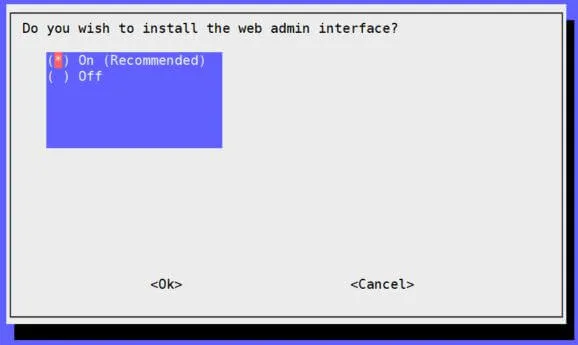
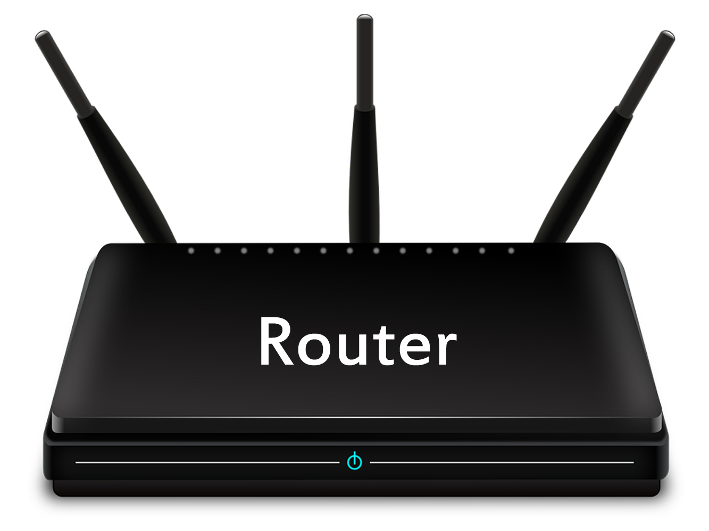
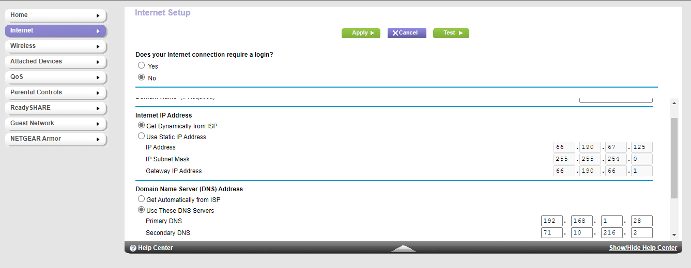
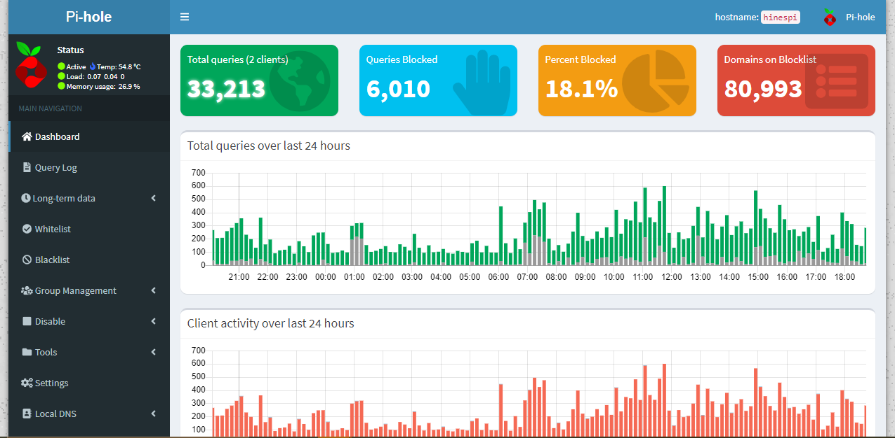

PiHole installation
May 7, 2021
Network Wide ad blocking
To get started, install PiHole onto your raspberry pi by logging into it via ssh, using the username: 'pi', and the password 'raspberry'. Then download the PiHole installer by running this command:
curl -sSL https://install.pi-hole.net | bash
Then, when the installer pops up, hit enter to continue. You will then have to choose an interface.
eth0 for ethernet, and wlan for wifi

I prefer to use the Google DNS, but choose whichever one you are most comfortable with.

I would suggest to use the space bar to select them all

When your devices need to connect to your pi, we need to be able to keep the ip address of the pi the same. Hit yes to assign a static ip address to your pi.

The installer will then ask you if you want to enable the web admin interface, I would check 'On' and continue.
I would check 0 and continue.

Your installation should be complete! This final page will give you your static IP, the link to your pihole admin webpage, and the login password for it.

Router Setup
May 8, 2021
In order for your devices to connect to your pihole instance, you'll need to change the primary ip address DNS server your router uses to your raspberry pi ip address. Now, all requests that go through your router will use your pihole instance to filter ads.
Verify Installation
May 16, 2021
To make sure that your pihole is fully set up, let's go to your pihole admin page. Get your raspberry pi's ip address, and put that into your browser. ex. 192.168.1.28 and log in. If you are unable to log in using the randomly generated password, run this command to set a new password:
pihole -a -p
You should be able to get to this page and see some requests getting blocked.
You should be all set from here!